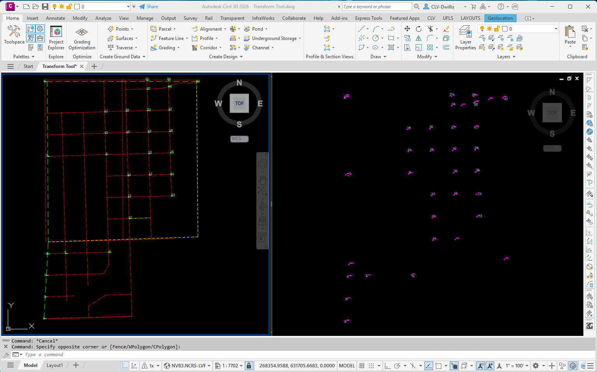
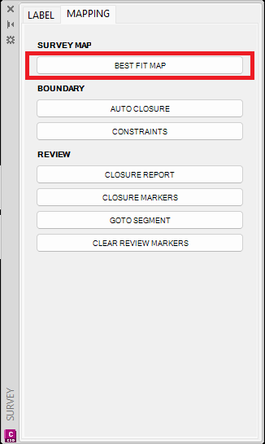
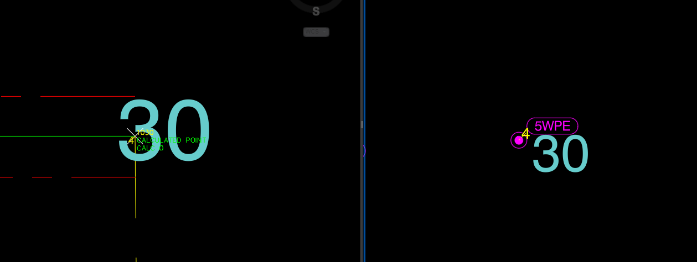
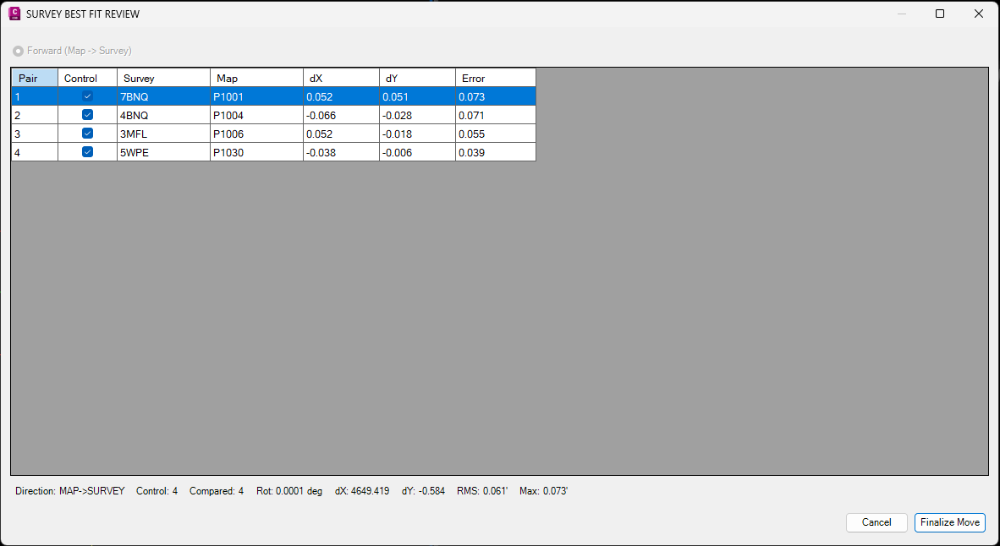
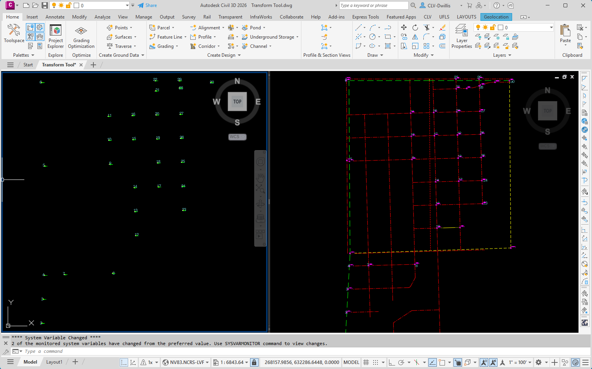

BEST FIT MAP
Transforms selected mapping linework so it fits surveyed control. Use this tool when the mapping data and surveyed data represent the same features, but the mapping needs to be shifted, rotated, or best-fit adjusted to the surveyed location.
Result: The selected map linework is transformed to the surveyed control location, and a BestFit XML file is written to the same folder as the active CAD drawing.
Important pick order: After starting the tool, select the map linework first. For each control pair, pick the survey / destination point first, then pick the matching map / starting point.
Basic Use
- Open the drawing and confirm the map linework and surveyed control points are visible. In the example, the original map linework is on the left and the surveyed control is on the right.
- Open Q4 Survey + Mapping, go to the MAPPING tab, and select BEST FIT MAP under SURVEY MAP.
- Select the map linework that needs to be transformed.
- Pick each control pair in the required order: survey / destination point, then matching map / starting point. Repeat for multiple matching points.
- Review the Best Fit results and check or uncheck the Control boxes as needed. The error values update live so weak control pairs can be tested before finalizing.
- When the results look acceptable, select Finalize Move. The map linework is transformed and a BestFit XML file is created in the folder where the CAD file is saved.





Notes
- Use well-distributed matching points when possible. Points spread across the work area usually produce a more reliable fit than points clustered in one small area.
- If one control pair produces a poor error result, uncheck that pair and review how the remaining control affects the fit before finalizing.
- The BestFit XML output provides a saved record of the best-fit setup/results for the active drawing folder.